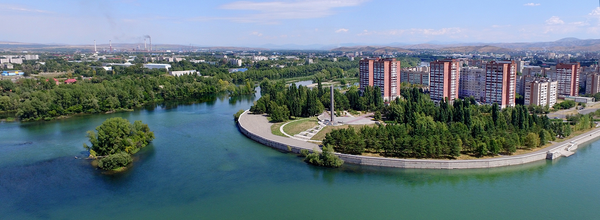

Популяризация итогов археологических исследований в ВКО
Результаты исследовательских работ на памятниках археологии области за период 2016-2018 годов в рамках Программы развития научно-исследовательских работ в сфере археологии в Восточно-Казахстанской области ежегодно освещались на Международной научно-практической конференции «Алтай – золотая колыбель тюркского мира», в которой принимали участие представители посольств, заслуженные деятели РК, эксперты в области археологии и тюркологии Казахстана и зарубежных стран.
Конференция включала пленарное заседание и заседания секций по двум направлениям – археология и тюркология. В рамках конференции организованы выставки, посвященные археологической, сакральной, туристической тематике и истории тюркологии. На археологической выставке были презентованы выявленные в ходе археологических работ ценнейшие артефакты.За период 2016-2018 гг. выявлено около 8992 единиц артефактов, часть из которых находится в процессе реставрации и лабораторных исследований. Одними из исторически значимых находок являются золотые изделия с объектов Берел, Шиликты и Елеке сазы, представленные в виде украшений, выполненных в сакско-скифском зверином стиле – фигуры оленей, барсов, грифонов. Ценные артефакты пополнили фонд Восточно-Казахстанского областного историко-краеведческого музея.